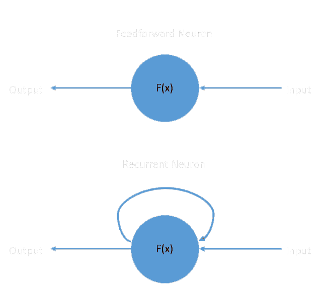
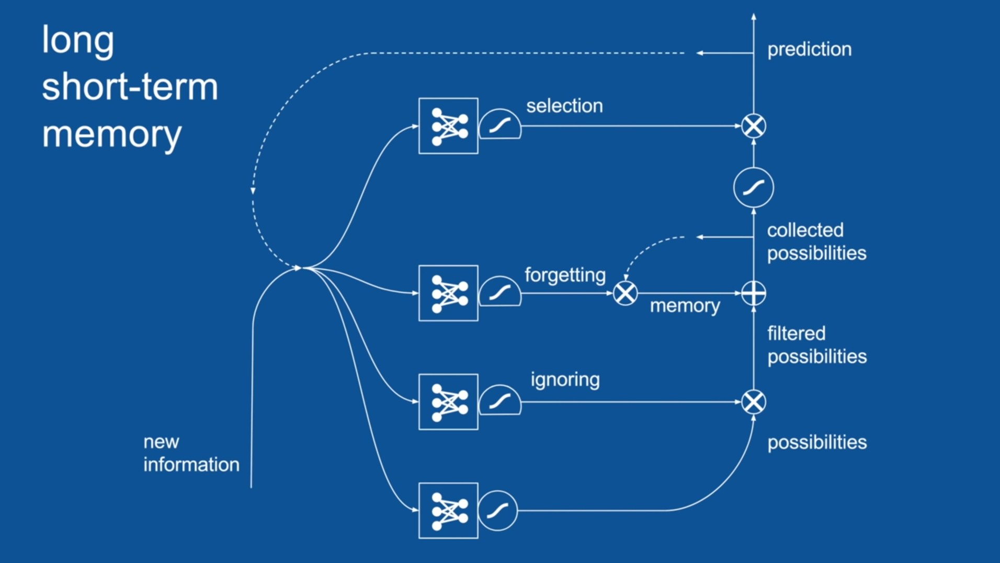
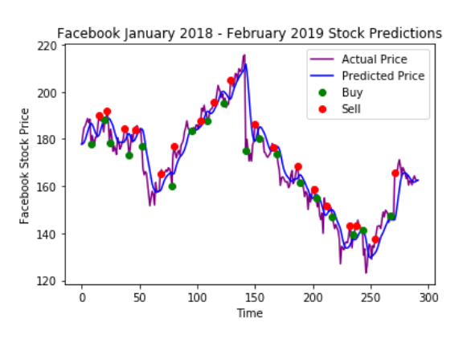

For decades, stock trading looked like this
But then technology got more advanced and everyone moved over to putting in trade requests online.
Now we’ve reached another evolution in stock trading — algorithmic trading.
Large investment banks like Goldman Sachs have already seen the power of algorithmic trading and have replaced hundreds of traders with computer engineers.
This blew my mind and got me curious about how I could make my own algorithm.
I got into trading Facebook stocks a couple of months ago, so I thought it would be cool to train an AI to do better than I did.
So I started looking more into a branch of artificial intelligence that would work well for stock market prediction — Recurrent Neural Networks.
Traditional neural works work by taking information, putting it through various mathematical functions and then turning it into a useful output. You can read more about traditional neural networks and how they work in this article: The Basic of Neural Networks.
The problem with these traditional neural networks is that they can’t use previous predictions as context for their next predictions.
This is because they use feed-forwards neurons. These neurons take an input and output something, but when they’re used again, there is no way for them to reference their previous predictions.

Recurrent neural networks solve this by using recurrent neurons. These take their outputs, and use them as data for their next prediction.
This is super useful for AI algorithms like speech-to-text where the probabilities for each possible next word is based largely on the previous word because of the language’s syntax rules.
One problem with recurrent nets is that even though they can remember their previous decisions, their memory eventually fades.
In the case of predicting stocks, that means that as we feed the neural network more and more years of data, eventually it’ll forget about the earliest data and won’t be able to get as much value from it.
The solution to this is called LSTM (aka. Long-Short-Term Memory). This is a technique used in artificial intelligence that uses “memory cells” in neural networks that act as brains.

Each LSTM layer is made up of multiple mini neural networks that are trained to optimally use memory to make accurate predictions.
The memory gate collects the possible outputs the network can come up with and stores the relevant ones for later use.
The selection gate uses the memories to select a final output from all the possibilities that the network comes up with.
The ignore/forget gate decides which memories are irrelevant to the decision-making process and gets rid of them.
LSTMs become especially valuable for stock prediction because they can use historical trends and data to decide how a stock will move.
Training the Model
The data I used to train my model came directly from NASDAQ’s website. I got 5 years of Facebook’s historical price data (2012–2017).
My network has 3 LSTM layers that each have 50 nodes, meaning that there are 50 features the network looks for.

Training a recurrent neural network
Every time the network goes through one training cycle, it uses its memory cells to keep parts of its older versions to make better decisions.
My network ends with an output layer with 1 node that outputs the AI’s guess for the opening price for Facebook’s stock the next day.
It measures its inaccuracy using a loss function called “mean squared error”. This measures how far off the predictions were from the actual values and squares them. Then it adds up those squares.
The neural network uses a popular optimizer called “adam” to reduce the error and make the network more accurate.
After training the neural network for 100 training cycles (called epochs) I tested my data on stock data that the network had never seen before to simulate how it would perform in the real world.
The network was told to buy the stock if it predicted a certain threshold of drop in the stock and to sell it if it predicted a certain threshold of increase.

My Code for the Neural Network Architecture
This graph shows the performance of my neural network over a year. The blue line is my AI’s prediction and the purple line is what the stock price actually was. The green dots represent a buy decision and a red dot represents a sell decision.
Though the neural network still has much room for improvement it was able to generate a 36.22% return on investment.
This means if you gave my AI $1000, it would hand you back $1362.20!
I’m excited to learn more about RNNs overtime and make even better stock trading algorithms!